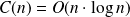

Tri rapide
Le tri rapide consiste là encore à diviser pour régner. On partitionne d'abord le tableau t à trier autour d'un pivot : on choisit l'une des valeurs du tableau (ledit pivot), par exemple t[0] et l'on construit deux tableaux avec les t[i] pour i > 0 (où l'on peut retrouver le pivot si sa valeur figure pour plusieurs indices...) :
le premier
t1avec les valeurs correspondant aux indicesitels quet[i] < pivot;le second
t2avec les valeurs correspondant aux indicesitels quet[i] >= pivot.
Il n'y a plus qu'à trier (récursivement bien sûr) t1 et t2 et à renvoyer les valeurs triées de t1, suivies de la valeur du pivot et des valeurs triées de t2. On obtient ainsi les valeurs de t triées. La preuve immédiate ne peut être donnée que par récurrence forte.
Question
Implanter cet algorithme en Python.
def tri_rapide(t) :
'''renvoie la liste t triee par la methode du tri rapide'''if len(t) < 2 :
# cas de basereturn (t)
else :t_inf, t_sup, pivot = [], [], t[0]
for k in range(1, len(t)) :
if t[k] < pivot :
# si le pivot se repete, il se retrouve dans t_supt_inf.append(t[k])
else :t_sup.append(t[k])
return ( tri_rapide(t_inf) + [pivot] + tri_rapide(t_sup) )
Question
Montrer que votre algorithme se termine et est correct.
len(t) est un variant de boucle.
"À chaque appel de tri_rapide, le pivot est à sa place dans t_inf + [pivot] + t_sup" est un invariant de boucle.
Question
Déterminer la complexité de votre algorithme.
Extrait de la synthèse sur les calculs de complexité du Cours 3 : Complexité.
On peut montrer en suivant le même raisonnement que pour le tri fusion, que la complexité du tri rapide est quasi-linéaire.
C'est une complexité quasi-linéaire :  .